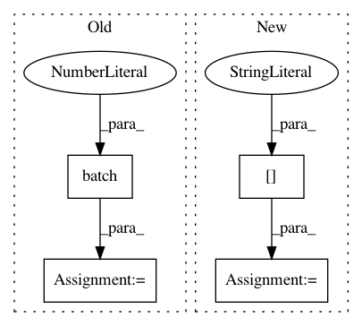

22c8e467fce55e8dd5c2a3b5363ea7fc7ef26bfb,trackpy/tests/test_reproducibility.py,TestReproducibility,setUpClass,#Any#,64
Before Change
// generate a new file
video = pims.ImageSequence(
os.path.join(path, "video", "image_sequence"))
actual = tp.batch(invert_image(video), diameter=9, minmass=240)
actual = tp.link_df(actual, search_range=5, memory=2)
actual.to_csv(reproduce_fn)
@classmethod
def tearDownClass(cls):
After Change
super(TestReproducibility, cls).setUpClass()
npz = np.load(reproduce_fn)
cls.expected_find_raw = npz["arr_0"]
cls.expected_find_bp = npz["arr_1"]
cls.expected_refine = npz["arr_2"]
cls.expected_locate = npz["arr_3"]
cls.coords_link = npz["arr_4"]
cls.expected_link = npz["arr_5"]
In pattern: SUPERPATTERN
Frequency: 3
Non-data size: 4
Instances
Project Name: soft-matter/trackpy
Commit Name: 22c8e467fce55e8dd5c2a3b5363ea7fc7ef26bfb
Time: 2018-01-23
Author: caspervdw@gmail.com
File Name: trackpy/tests/test_reproducibility.py
Class Name: TestReproducibility
Method Name: setUpClass
Project Name: yahoo/TensorFlowOnSpark
Commit Name: 981e4266d4ea816b08a762193bd52f40cd1a3242
Time: 2019-08-07
Author: leewyang@verizonmedia.com
File Name: examples/mnist/keras/mnist_inference.py
Class Name:
Method Name: inference
Project Name: dpressel/mead-baseline
Commit Name: 330626a775087bfda043dceb98522aedb447c703
Time: 2017-06-27
Author: dpressel@gmail.com
File Name: seq2seq/python/pytorch/train.py
Class Name:
Method Name: show_examples